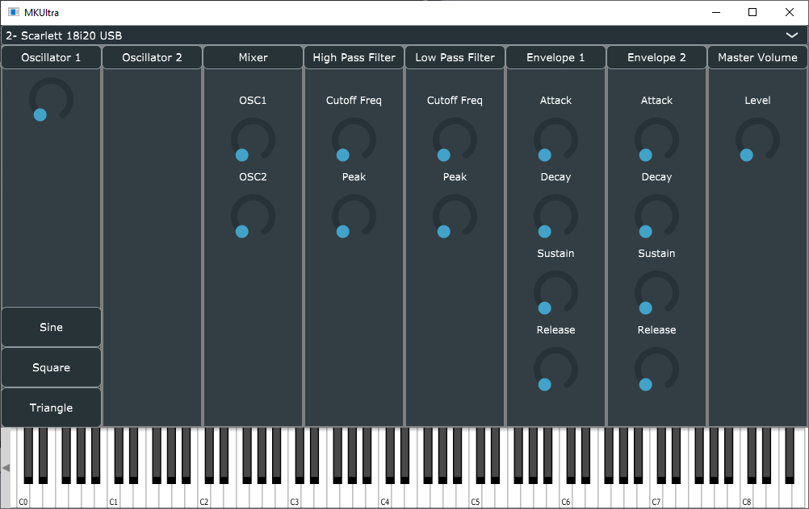

Software Synthesizer Development Journal CSC 461 2019
|
Introduction - This is a diary of the development of a software synthesizer |
- Since this project is mostly about learning about digital sound synthesis I decided to begin by looking for examples of what other people have done. One of the resources I discovered was a short series of YouTube videos detailing how to create a simple software synth. Most of the heavy lifting of actually interacting with the sound card is done with a header file called olcNoiseMaker.h and this will be investigated further in the future.
- At this point I’m using other people’s examples as a learning tool. This version is just an early rough draft of what the project will eventually become.
- https://youtu.be/tgamhuQnOkM
- The basic idea behind the first video is to evaluate a sine wave function based on a count of the time since the program has started. This function is constantly called in order to determine the value of the amplitude at each sample point.
- This is illustrated in the following formula:
double dOutput = sin(dFrequencyOutput * 2 * 3.14159 * dTime); |
- dFrequencyOutput is the value of the note in Hz that we want to be played
- 2 * 3.14159 is used to convert this frequency value to an angular velocity
- dTime is a timing counter since the beginning of the program
- Examples of the code I wrote while following the video can be found here: https://github.com/iainemslie/CSC461Project/tree/master/Test1
- The second video creates a couple of new functions: one that converts frequency to angular velocity, and the other for selecting and evaluating various different waveforms.
- The Square Wave simply takes a sine wave and outputs a 1 if it is greater than 0 and -1 if it is less than 0. This is shown in the following formula:
return 0.3 * sin(w(dHertz) * dTime) > 0.0 ? 1.0 : -1.0; |
- The Triangle Wave smooths out the curve of the sine wave by returning the arcsin of the standard sine wave from the previous example.
return asin(sin(w(dHertz) * dTime)) * 2.0 / PI; |
- The Saw Wave is calculated using two different methods. The mathematical way to generate a sawtooth wave is to sum up all of the sine wave multiples of a particular base frequency. However this is computationally expensive. Another way to approximate it is use the mod function to simulate the addition of multiple sine waves.
- The first method is shown in the following formula:
double dOutput = 0.0; for (double n = 1.0; n < 100.0; n++) dOutput += (sin(n * w(dHertz) * dTime)) / n; return dOutput * (2.0 / PI); |
- Here is the second method:
return (2.0 / PI) * (dHertz * PI * fmod(dTime, 1.0 / dHertz) - (PI / 2.0)); |
- The last sound source created is a pseudo random noise generator. This is used to generate whitenoise by generating a number between 1 and -1. These can be used to create wind effects through filtering or as percussion among other uses.
return 2.0 * ((double)rand() / (double)RAND_MAX) - 1.0; |
- After adding these oscillators the video talks about creating ADSR envelopes to create natural and realistic sounds. ADSR stands for attack, decay, sustain and release.
- Attack is how long it takes for a sound to reach its maximum volume
- Decay is how long it takes to transition from the loudest sound to the sustain level
- Sustain is the volume during the main part of the sound when held
- Release is the time it takes for a sound to silence after a key is released
- The following diagram shows each of these stages:
- After following along with these videos I have some thoughts on more features I’d like to implement.
- Including a pink noise, brown noise etc generator.
- Reading and playback of midi files and real time midi from an instrument
- GUI control of the various oscillators and then envelope and filters based on the layout of old hardware synthesizers
- Visual representation of the waveform being output. This would just graph the amplitude values along a timeline for each sample.
- Implement a file like olcNoiseMaker.h but for use in OSX
- Create some kind of text to speech synthesizer
I’d like to build a prototype of the GUI right away. I’ve been using visual studio so far so here’s a couple of tutorials I’m going to read through to learn how to do that.
https://docs.microsoft.com/en-us/windows/win32/learnwin32/your-first-windows-program
https://docs.microsoft.com/en-us/cpp/windows/walkthrough-creating-windows-desktop-applications-cpp?view=vs-2019
- I was thinking about how to add midi input for the synthesizer today. There are big differences in the way that Windows and OSX handle audio interaction and APIs. We will have to decide to only develop for one platform or find a way to write it so that the core of the program is the same but it interacts with the OS differently depending on which platform the user is on. It would be nice to create something that is compatible with the AU or VST interfaces. For now I’m going to finish the rest of the video tutorials and then maybe try experimenting with getting midi input from a keyboard and then printing the midi messages to the command line.
- After spending some more time following the videos the synthesizer now has 6 different oscillators which can be added together to create sounds, an ADSR envelope, the ability to frequency modulate the basic oscillators (hence an LFO as well) and the use of structs to make self contained instruments which can be used to save settings.
- This version can be found at the following link: https://github.com/iainemslie/CSC461Project/tree/master/Test3
- The next steps I would like to learn more about are parsing real time midi input from a keyboard and using an interactive GUI to change the settings of the synth in real time. Up to now I’ve been working on Windows but it might be easier to try experimenting with the Apple CoreMidi API. I might just try making a temporary layout of the graphics.
- My goal for today is to connect one of my MIDI keyboards and to read input from it and print the results.
- So after spending some time this morning I’ve managed to connect my midi keyboard and get some code running which is able to recognize my midi devices and receive input messages while printing them to the console. This version of the code can be found here: https://github.com/iainemslie/CSC461Project/tree/master/Test4
- At first I tried using OSX core midi but immediately ran into problems so switched back to Windows.
- I based this on the Windows MIDI documentation found here: https://docs.microsoft.com/en-us/windows/win32/multimedia/midi-functions and on some code I found at the following link https://gist.github.com/yoggy/1485181
- I was trying to use masking to get the individual bytes and I was able to determine whether a data message was an on or off from this. I realized while I was doing this that MIDI is big-endian while Windows is little-endian. I will have to think of the best way to deal with this.
- My next goal is to combine the two programs I have written so that I can use MIDI input from an external device to trigger the synthesizer instead of using the computer QWERTY keyboard.
- My MIDI keyboard has the option of using its own clock or an external clock to synchronize its MIDI output. This means that the midi messages that are sent are synced to this clock rate. Each of these messages is made up of 3 bytes.
- 1. Status byte - this determines the type of MIDI message
- 2. Data1
- 3. Data2
- Here’s a good resource on MIDI messages https://www.nyu.edu/classes/bello/FMT_files/9_MIDI_code.pdf
- For now I’m only interested in the NoteOn and NoteOff messages and the note values contained in the message. I simply want to come up with a way to map these midi note values to the correct frequencies to be output by the synthesizer. I could possibly create an array from 0-127 with the frequency of each note at the associated value.
- I’ve successfully managed to get the correct 0-127 digit number for the midi keys to be printed. I did this through some sneaky bit shifting but there’s probably a better way to do it...
- Now I want to combine what I’ve done already in separate programs. I think I’ll maybe have to clean up the code and create some header files for each different module. I’m not really sure what I’m going to do about threading or classes since I’m learning C++ as I go and treating it as standard C at the moment.
- I found a nice little formula on wikipedia to convert a MIDI note number to its frequency:
https://en.wikipedia.org/wiki/MIDI_tuning_standard
- This should allow me to simply plug this value into the existing code I have in the synthesizer. Here is the code that I have up until now: https://github.com/iainemslie/CSC461Project/tree/master/Test5
- I now have to decide what’s the best way to combine my midi input program with the synth program.
- I was having trouble trying to figure out how to integrate all the code. I’ve been thinking about how things should be organized so that most of the elements of the synth become classes and objects. For example a preset sound is a class that contains settings for various instrument parameters. Then these can be broken down into every subcomponent like individual oscillators, envelopes, filters etc.
- I wanted to just have the satisfaction of getting the MIDI to play some sounds so I went back to the very beginning and just added it to the MIDI.cpp file. I saved it here: https://github.com/iainemslie/CSC461Project/tree/master/Test6
- I made a little recording by playing a midi track in Musescore and sending out the midi info which was captured by the synth program and then recorded by Audacity. This can be found here: https://iainemslie.github.io/audio/BWV1013AllemandeFirstSynthRecording.mp3
- This morning I began by creating a class file which models the interface of the Korg MS20 synthesizer. It’s basically just a bunch of private variables for controlling the synthesizer and setters to change them. I wanted to do this to start thinking about how I’m going to organize everything and how the GUI will work. This can be found here: https://github.com/iainemslie/CSC461Project/tree/master/Test7
- If I were to model the MS20 then there would be two oscillators which different waveform options then various modulation options and filters etc. The way I’m envisioning things is that I can create class files for each subcomponent i.e. each section of the signal flow (VCO, filters, envelopes etc.) then these can be combined to model existing synthesizers or to create really unusual things like having 50 oscillators combined together doing additive synthesis. I think the best way to do things is to make everything as modular as possible. I’d have base classes that are then overridden if necessary.
- Thinking about additive synthesis: It would be cool to do frequency domain spectrum analysis of different instruments in order to emulate them by mixing together oscillators to mimic the overtone partials above some fundamental. A way of doing this is to have a bunch of oscillator objects which feed into some mixer object through which their relative volumes can be adjusted.
- I’m going to pause for a little bit on writing code and take some notes from the book BasicSynth: http://basicsynth.com/
- Chapter 1 Notes:
- If we imagine a point moving around the unit circle anti-clockwise starting at point (1,0). Then the line formed by this point and the origin forms an angle
 with the x-axis.
with the x-axis.
- We can see that the sin function gives us the y-coordinate of the point on the unit circle and the cos function gives us the x-coordinate of the point on the unit circle.
y = sin(0) | y = 0 | y = cos(0) | y = 1 |
y = sin(π/2) | y = 1 | y = cos(π/2) | y = 0 |
y = sin(π) | y = 0 | y = cos(π) | y = -1 |
y = sin(3π/2) | y = -1 | y = cos(3π/2) | y = 0 |
- Here is a graph of the function f(x) = sin(x). As we can see from the picture it is a repeating wave with a period of 2
 ~ 2(3.14159) and an amplitude of 1. This means that the curve moves from 0 up to 1 and back to zero in the time of . Then from 0 down to -1 and back up in the time of . cos can be thought of as a phase shifted sine wave.
~ 2(3.14159) and an amplitude of 1. This means that the curve moves from 0 up to 1 and back to zero in the time of . Then from 0 down to -1 and back up in the time of . cos can be thought of as a phase shifted sine wave.
- We can write the sine function as follows.
- Changing the amplitude will scale the maximum and minimum y values. Changing the period will change the frequency of the waveform. Phase shift moves the function along the x-axis. Vertical shift moves the function up or down the y-axis.
- This is useful because we can use the amplitude in audio to control volume. Phase shifting is used in many effects and in filtering. We can phase invert a signal x by taking sin(-x). Taking sin(x) + sin(-x) will cancel the signal. (it sums to zero)
- Fourier proved mathematically that any period waveform can be created by summing together infinitely many sine waves. Since pitched sound is a periodic waveform we can represent any pitched sound as summing of sine waves.
- As an example; take the equation:
- This gives us the interesting waveform:
- If we were to measure the amplitude (the value of the function on the y-axis) at some regularly spaced time (intervals on the x-axis) then we can get a digital representation of the waveform. According to the Shannon-Nyquist Theorem we need this sampling rate to be at least twice the frequency of the highest frequency of some band limited audio source. Since human hearing is around 20Hz to 20,000Khz we can sample at twice this to fully capture the sound for our perceptions. The standard CD sample rate is 44,100 Hz so this is a good choice to start with.
- Frequency is measured in cycles per second. So if we have a sound at 440Hz then the waveform repeats 440 times a second. So the time of one period of the waveform is 1/440th of a second. We can write this as follows:
- The number of samples generated for a given time period is as follows:
- We need to represent the time values as doubles but can use integers to represent the sample numbers.
- For quantizing the amplitude we can use a 16 bit value since this is the typical standard used. This is because it gives us around 96dB of dynamic range which closely matches that produced by music. Human hearing doesn’t perceive small changes in amplitude because of this it is represented using a logarithmic scale. The decibel scale represents the smallest change in amplitude that humans can perceive as 1dB. This can be defined as:
- Since each bit represents a power of two increase in the range one bit can represent ~ 6dB thus 16 bits results in 96dB.
- Internally within the program we should represent the sample amplitude as floats.
- Chapter 5 Notes:
- To mimic the function of analog oscillators with the computer we want to evaluate a period function for each sample time. We want to determine the phase increment. This is the amount that we move around the unit circle for each sample (the distance between samples on the x-axis in the graph of the sin function). We can find the phase increment for one sample using the following:
- Where fs is the sample rate and 1/f is the time of one period. 2radians is the period so we’re diving this by the number of samples in one period.
Taking a break from the notes; I want to try and rewrite the earliest version of the synth but do it so that individual oscillators can be instantiated as objects from a class.
- I have implemented the oscillator as a class with its own set of variables which can be changed using getter and setter methods. This should make it easier to create a modular object oriented style for the program.
- https://github.com/iainemslie/CSC461Project/tree/master/Test8
- I have added a mixer class which takes input signals from two different oscillator sources and adds them together while adjusting their volume. This is mimicking the VCOmixer found on the Korg MS20. If I dynamically allow at runtime the addition of more oscillators to the mixer then this will provide more flexibility later on when adding many number of oscillator to a project. I will have to think about c++ memory management if I do this.
- I have added MIDI control back into the version I have created with classes. This version can be found here: https://github.com/iainemslie/CSC461Project/tree/master/Test9
- The next thing I want to do is to redo the ADSR envelope generator so that it is in its own class. I reused an old version of envelope class I had made earlier. It works but the note off isn’t working properly. The note just cuts off immediately when a MIDI key is unpressed instead of fading out. It also doesn’t have the proper methods so I should redo this. ->( I later fixed this by removing old lines setting the frequency to be zero from before there was an envelope.)
- Another thing I need to do is create instrument classes that contain within them the oscillators, envelopes etc. Then there can be a global pitch value for midi sent to this which then sends this to each oscillator of the instrument. I need to figure out how to do this with polyphony as well.
- Today I’m going to start by modifying the ADSR class and header file so that it is set up properly. Then I’m going to create an instrument class to contain the various sound modules. Here is what I have before I do this: https://github.com/iainemslie/CSC461Project/tree/master/Test10
- I spent some time redoing the envelope class. While doing this I realized I don’t have a consistent scheme for naming variables, classes etc across the whole program. I need to think about what system I want to use.
- I got the program to properly print out the MIDI input devices by using wcout instead of fprintf or cout.
- To deal with polyphony a note structure is created in the video series https://www.youtube.com/watch?v=roRH3PdTajs
- I was running into a problem with multiple class definitions but solved using #pragma once at the top of the header file
- I need to fix the envelope with my own formulas or update them from the later video version. -> I did this later but there are still pops when retriggering notes or when playing one note while another is held. I will have to investigate the best way to do polyphony.) I’m trying to build up the overall structure of the program at the moment so I’m basing code off of the videos but I will get more in depth with each module later on..
- I think I’ve reached a good level of modularity for now. The next things I should investigate are polyphony, frequency modulation, refining the existing equations I have for oscillators and envelopes. After this I can begin looking at adding more signal processing modules like filters and audio effects. The implementation of the GUI looms as well.
- Here is the code up to this point: https://github.com/iainemslie/CSC461Project/tree/master/Test11
- I’m going to take some more notes from the BasicSynth book resuming from page 38.
- The phase increment can be written:
- Where
 (the angular velocity) represents the signal as radians/second and can be written:
(the angular velocity) represents the signal as radians/second and can be written:
- To get the value for each sample point of our sine wave function we can use the following formula.
- This is the same method from the videos and implemented in our code. The book is taking the approach of writing the output to a file directly instead of sending samples to the sound card. Since it is taking this approach it illustrates a way of using a for loop to iterate through the sample count for a certain duration of time and evaluating the function at that sample. We are essentially doing the same thing except that our for loop never ends and the oscillator is only outputting sound when keys are pressed.
- “To save processing time, the frequency values for the standard musical scale are usually calculated during program initialization and stored in a table. The pitch can then be quickly converted into frequency by using the pitch value as an index into the frequency table.”[1] - Currently I’m doing this every time I get a midi note. I should create a lookup table instead.
- Chapter 6 Envelope Generators
- We can represent an ADSR envelope attack or decay with the equation for a line
Where y represents amplitude and x represents time.
- We can represent an ADSR envelope attack or decay with the equation for a line
- Significant wrangling of getting CMake to work inside Visual Studio to build the project. This took much more work than initially thought.
- The CMake addon needs to be installed in Visual Studio.
- CMake will generate the Visual Studio solution project files needed to build the project. On Linux CMake will create a Makefile that is run to build the project.
- Building on Linux is possible from the command line.
For example:
$ cd .../CSC461Project/MKUltra/MKUltra
$ cmake -H. -Bbin && cmake --build bin
The executable is at:
$ ./bin/MKUltra
To clean up all the CMake files and start fresh:
$ rm -R bin
CMake creates the “bin” directory in which to build the software. This keeps the object code away from the source code.
- To run with Visual Studio, select Open Project Folder. Find the project’s root directory. It should be …\CSC461Project\MKUltra with a top-level CMakeLists.txt file.
- The file that has main() in it needs to be selected to be the entry-point of the project. This can be done by right-clicking on synth.cpp and selecting from the drop-down menu.
- Building on Linux
- Note: Running with the olcNoiseMaker.h library requires that a 32-bit (x86) executable be made. An exception somewhere in the threading library is thrown if ran in 64-bit (x64). Also, I read that the difference between Debug mode and Release mode can have an effect on the context of threads, and may be a source of mysterious errors on Windows.
- Import Test 11 code into the CMake build framework to build on Windows.
- Small hack needed to get woc.szPname and pmic.szPname to be pushed back into the vector of wstrings. Just a conversion between strings and wstrings.
- Some build warnings for signed/unsigned mismatch and left shifts could potentially be undefined behaviour. These will be fixed in future commits.
- Building in Visual Studio requires that the winmm.lib library be added to the list of libraries in the Configuration Settings.
- No commits happened in this time, but significant effort was made to compile the PortAudio portable audio library on Visual Studio via CMake. So far, this effort has been in vain.
- The last stable release of PortAudio is from 2016 and is Version 19.6.0.
In Linux PortAudio is a package and can be installed via a command such as:
$ sudo apt-get install libasound-dev portaudio19-dev libportaudio2 libportaudiocpp0
This command hasn’t been tested for Ubuntu, as I am developing on OpenBSD, which uses a command such as:
$ sudo pkg_add portaudio-svn
On OSX, using Homebrew:
$ sudo brew install portaudio
On OSX, using MacPorts:
$ sudo port install portaudio
- Building synthesizer with PortAudio library. It currently only outputs a sine wave.
- CMakeLists.txt file now looks for the portaudio library under /usr/local. This should make it able to be found on OSX with Homebrew or MacPorts.
- PI constant changed to M_PI, which is found in <cmath>. An #ifndef defined in sound.h is if it isn't found in <cmath>.
- A new Sound class is developed that currently only outputs a Sine wave in mono. Also, a ScopedPaHandler class is used to terminate PortAudio when out of scope.
- olcNoiseMaker.h is no longer used. Code that used it is temporarily commented out via #if 0 / #endif. The synth code is not currently hooked up to PortAudio. The MIDI code is also temporarily commented out.
- May possibly build on Windows, but only Unix has been tested so far.
- Not yet committed, but work on hooking up PortAudio into the current synthesizer framework is in progress. PortAudio has been integrated, but the sound quality is not yet of a high standard. There is too much jitter, as doing large computations in the audio callback with functions such as sin() for each sample is too resource intensive to get real time response. A sample of the jitter is available at https://iainemslie.github.io/audio/2019-10-27_Jitter.mp3
- The olcNoiseMaker.h library uses a double dTime for synchronization between all functions. This approach doesn’t scale well. A better approach, as shown starting on page 80 of the BasicSynth book, is to use a wavetable of pre-computed values for one period of a particular waveform. This type of setup is in line with the expected behaviour of the PortAudio library. More work and research into this type of setup is needed to understand the impact upon the architecture of the entire project.
- PortAudio on OpenBSD seems to not have timing implemented, as through the library function Pa_GetStreamTime(). The currentTime structure member from the TimeInfo struct is always zero, which means that an error has occurred. I can not determine what the error is, though. Perhaps there is a misconfiguration of the library on my part.
- I have used the function clock_gettime(CLOCK_MONOTONIC, &nowTime) to get the current time, and the macro timespecsub(&nowTime, &startTime, &delta) to find the length of the passage of time. This is my own implementation, instead of using what is offered by PortAudio. Hopefully this is a temporary solution and either PortAudio is made to work properly, and/or this type of timing is not needed (unlikely, as I am sure synchronizing with MIDI would need some sort of timing with the audio).
- We looked at a variety of ways to implement the GUI. Some time was spent trying to create application windows using graphics libraries such as wxWidgets and the Win32 API. While these may be useful in a lot of cases they were too much work to learn and beyond the scope of this particular project. Instead, we decided to use the Juce application framework. Juce offers a large library of GUI and plug-in features for use in mobile and desktop applications. We had decided early on that cross-platform support would be ideal. Juce gave us the option of writing C++ code that could be built on a variety of operating systems including; Linux, Windows, OSX, iOS and Android. In addition, it provided us with a much easier way to implement an appealing and interactive graphical user interface. Chris was able to create a mockup of the basic layout idea we had using Juce. This version is pictured below.
- This particular layout is mimicking the layout of traditional hardware performance synthesizers which prioritize ease of use for musicians rather than trying to allow for every possible method of creating sounds.
- Each of the individual panels will be filled in with knobs, sliders and buttons which will allow the user to interact with the synthesizer. For example, the oscillator components will include a type (sine, square, sawtooth etc.), an octave range (8’, 16’, 32’ - like organ stops), pulse width etc. These panels will be implemented as a panel class which will be inherited by individual panel types such as oscillator, mixer, HPF etc.
- We’re going to complete the panel layout as well as combining the work we did earlier to create the oscillators and envelope classes. Then we’re going to try implementing more features such as reverb, delay, LFO etc. Ideally it will be possible to swap panels in and out or have, for example, an individual effects panel which can be swapped out with different effects.
- As of right now we are able to use the computer’s built in midi interface to control the synth, as well as the onboard keyboard. The first oscillator we have is a simple sine wave. We will have to build individual classes for each type of oscillator which will then be selected by the user through the GUI.
- This afternoon I was able to properly implement the use of the square wave which can now be selected alongside the sine wave. I created a setOscillatorType method which is part of the Synth.h file. When called, this method clears the existing voices and sounds and adds in new voices. I was having problems before because I didn’t really understand what was happening. This allows synthAudioSource.setOscillatorType(OSC_TYPE) to be called in the main component as the result of a GUI setting change.
- There are problems using the existing method of the square wave however. It sounds like it’s out-of-tune the further from A440 you get. Also the square wave is perceptually much louder than the sine but this is to be expected.
- Here’s a demo of the new sine wave using the Juce framework. Unfortunately there are lots of clicks since the envelope hasn’t been implemented yet. https://iainemslie.github.io/audio/Brittania.mp3
- The following will be some notes on digital filters from BasicSynth
- Filters alter the spectrum of a sound by amplifying or attenuating selected frequencies. BasicSynth lays out an intuitive understanding of filters as resulting from the addition of waveforms that are out of phase from one another, resulting in cancellation or addition of waveforms. This leads to the important audio phenomenon of phase cancellation. Audio effects such as filters, chorus, flangers and phasers make use of this idea.
- In the image above. We have the graph of two functions a=sin(x) and b=sin(x+π). Since the period of both functions is 2π and they are phase offset by π then the peaks of “a” occur exactly where the valleys of “b” are. This means that when they are summed together the result will be equal to y=0.
- In the image above we have two functions a(x) and b(x) which are both equal to the same function sin(x). When these two functions are added together c(x) = a(x) + b(x), the result is a waveform with twice the amplitude of the component waveforms.
- In digital signals we can sum samples by adding them together and a phase shift can be created by delaying the samples by some amount of sample times. These samples can be stored in a buffer and then later added back to the signal creating a sum of the original waveform with a phase shifted version of itself.
- The different types of filters can be created by combining the delayed sample with the current sample in different ways. A low-pass filter is created by adding a delayed sample to the current one - attenuating lower frequencies. A high-pass filter can be created by subtracting a delayed sample - attenuating higher frequencies.
- If we add two delayed samples to the current one this creates a notch filter. If we subtract two delayed samples from the current one this creates a band-pass filter. A comb filter uses multiple delayed samples.
- The delayed sample can be multiplied by a value between 0 and 1 to reduce the amplitude. This reduces the filtering effect and flattens out the curve.
- Last night I made another demo of the synth but noticed that we were getting clicking sounds when lots of notes are played. This is due to the envelope features not being implemented yet.
- The original version of the synth used the envelope to attenuate the level of the sound by calculating the time since the last key was pressed or released. In the Juce version we are outputting sound directly from each waveform class. It would be better to think about the “signal path” through the synth. So that we output the results of each module to some common mixer or function which then sounds the results out to the soundcard. I will look into doing this in the afternoon. After the envelope I’m going to implement LFO and resume the work on filters.
- I should create a base oscillator class then individual types sine, square etc which inherit from it but differ only in their method of generating samples
- Juce contains and ADSR class which I will use to implement the envelope.
- I spent the afternoon messing around with getting the GUI interface set up and getting it to change settings within the synth. I was having trouble figuring out how to do this but ended up passing a reference to the synthAudioSource object into the OscillatorComponent through the constructor. This allows the buttonPressed() callback function inside the OscillatorComponent to call synthAudioSource.setOscillator() and now it is possible to change the waveform of the oscillator while the synth is in use. Here’s a picture of the current GUI configuration:
- 